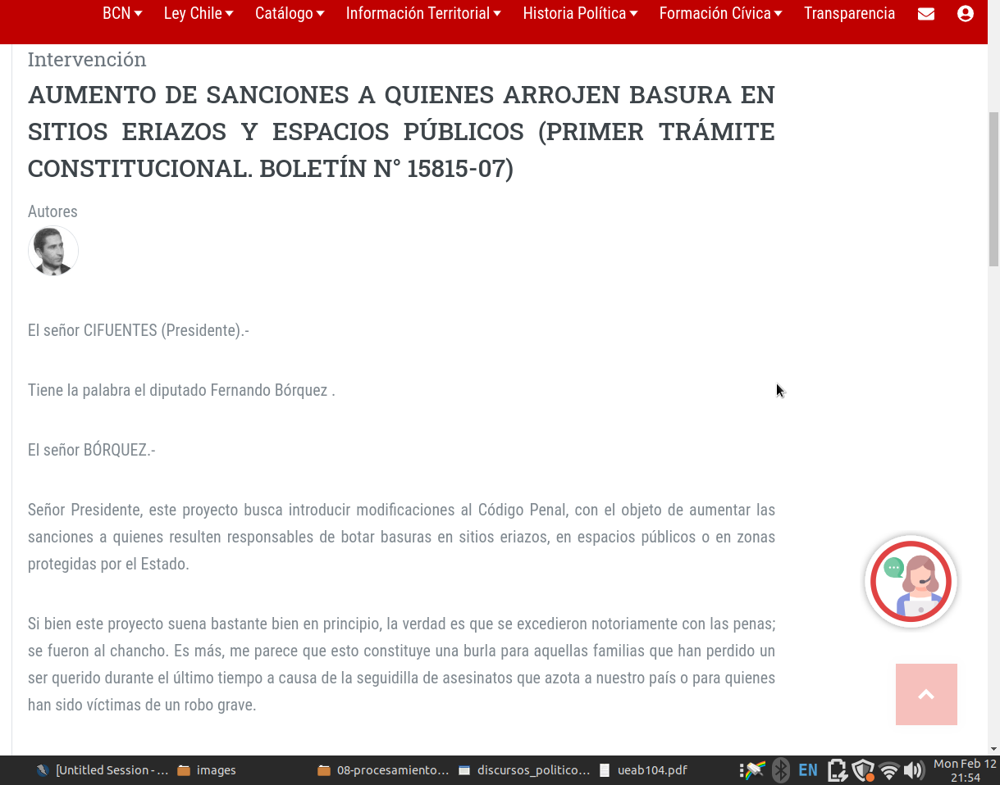
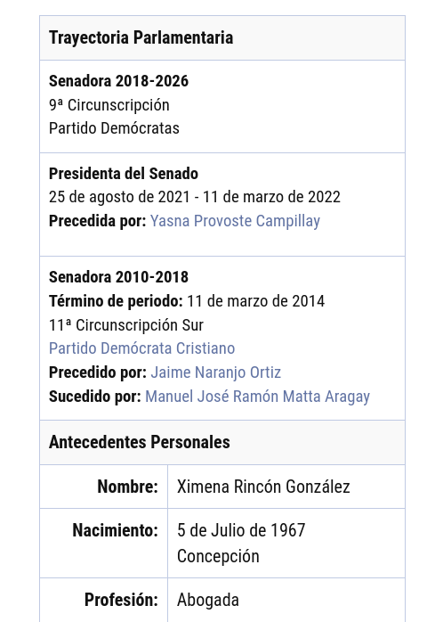
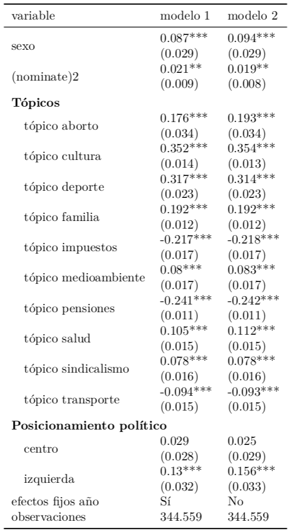
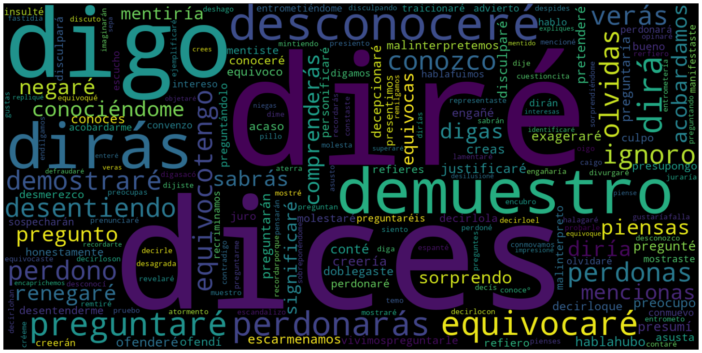
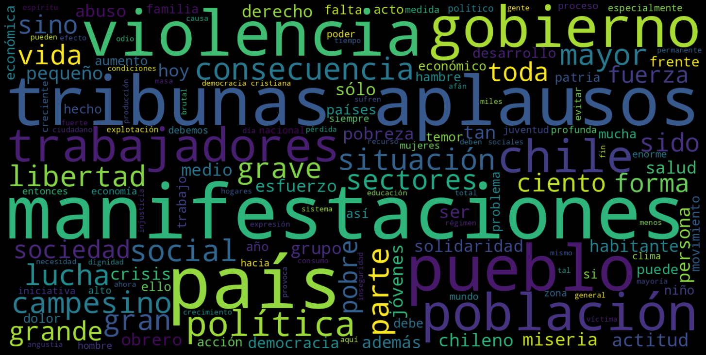
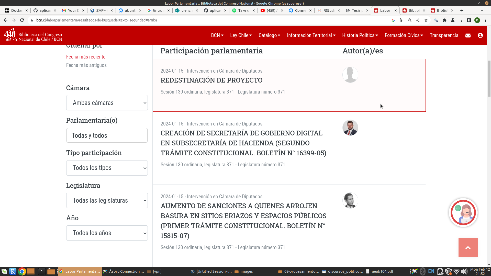

Tesis para optar al grado de magíster en análisis económico
Emotividad y polarización política en discursos parlamentarios chilenos: 1965 a 2022
Contenidos
- Motivación
- Datos
- Metodología
- Resultados
Motivación
In politics, when reason and emotion collide, emotion invariably wins
- Drew Westen (2008)
Motivación
He aquí el Bukele chileno, el comisario contra las lacras asquerosas que inundan de drogas a nuestros jóvenes […] Su único derecho es podrirse en las cárceles
- Gaspar Rivas (2022)
¿Cómo ha evolucionado el discurso parlamentario en Chile?
¿Se ha vuelto más emotivo o más racional?
Estudios relacionados
Tradicionalmente, se ha utilizado NOMINATE (Poole y Rosenthal, 1983) para estudiar el comportamiento de los políticos
Desde aproximadamente 2010 aparecen estudios que utilizan datos de texto (Goet 2019; Osnabrügge, Hobolt, y Rodon 2021; Kosmidis et al. 2019) y audio (Dietrich, Hayes, y O’Brien 2019)
Disminución de la sofisticación lingüística en Reino Unido (Benoit, Munger, y Spirling 2019)
Tendencia hacia un lenguaje más polarizante en EEUU (Jensen et al. 2012; Rheault y Cochrane 2020) y Reino Unido (Peterson y Spirling 2018; Goet 2019)
Los temas en la discusión parlamentaria son abordados con distintos niveles de emocionalidad en EEUU (Gennaro y Ash, 2021)
Políticos ubicados en los extremos ideológicos tienen mayor carga emotiva (Gennaro y Ash, 2021)
Cooperación entre partidos se debilita a fines de los sesenta y se recompone desde 1990 (Alemán, 2009)
Entre 1997 y 2000 las coaliciones votan de manera cohesionada en la Cámara de Diputados. Se debilita el centro político (Saiegh y Alemán, 2007)
Los proyectos de ley exitosos presentan una mayor colaboración entre coaliciones en el periodo 2007-2017 (Le Foulon, 2020)
Después de la Convención Constitucional se produce un aumento de la polarización y un debilitamiento del centro (Mascareño et al., 2022 )
Fuentes de información
Discursos parlamentarios

Intervenciones parlamentarias
Se extrajeron todas las intervenciones entre 1965 y 2022
| filtro | cantidad de filas |
|---|---|
| datos brutos | 579.663 |
| datos filtrados | 209.830 |
Biografías parlamentarias


Votaciones en Cámara
Se obtuvieron 20.271 votaciones entre 2002 a 2022

Metodología
Word embeddings
Cada palabra es representada por un vector de 100 dimensiones

Diccionario LIWIC
El Linguistic Inquiry and Word Count (LIWIC) contiene clasificaciones de palabras
Procesos psicológicos emotivos y cognitivos
amor = emotivo
pensar = cognitivo
Seguimos estos pasos
Se convierten las palabras del dicionario en vectores
Calculamos un vector medio (centroide) para cada polo
vectores \(E\) y \(C\)
Identificación de la polaridad
| total intervenciones | total párrafos | total palabras | párrafos/intervención | palabras/intervención |
|---|---|---|---|---|
| 209.830 | 2.649.588 | 49.065.194 | 12,63 | 233,83 |
Todos los textos son representados como un vector de 100 dimensiones
\[ Y_i = \frac{sim(d_i, E) + b}{sim(d_i, C) + b} \] Entre mayor sea \(Y_i\), más sesgo hacia el polo emotivo
scatter plot
Polarización con WNOMINATE

Estadística descriptiva
Emocionalidad a lo largo del tiempo

Tópicos


Posicionamiento ideológico y emotividad

Resultados
Modelo sin NOMINATE

Emocionalidad estandarizada
Categorías base: hombre, diputado, educación, derecha y predictadura.
Errores clusterizados a nivel de político
90%, 95% y 99% de confianza.
Modelo con NOMINATE

Emocionalidad estandarizada
Categorías base: hombre, educación, derecha
Errores clusterizados a nivel de político
90%, 95% y 99% de confianza.
Comentarios finales
Identificación de tópicos debería contemplar más categorías
No se cuenta con votaciones de diputados para todo el periodo
No se cuenta votaciones de senadores
Se cuenta con pocos datos para el periodo anterior a 1973
La polarización ideológica está relacionada con el uso de lenguaje emotivo
No se encuentra exactamente la relación en forma de U entre posición ideológica y emotividad, identificada por Gennaro y Ash (2021)
Los temas legislativos son tratados con diferentes niveles de emotividad
Existe una relación entre los ciclos parlamentarios y la emotividad de las intervenciones
Los datos están disponibles en una base de datos mysql
Se pueden explorar en el siguiente sitio
ANEXOS
Preprocesamiento del texto
| total intervenciones | total párrafos | total palabras | párrafos/intervención | palabras/intervención |
|---|---|---|---|---|
| 209.830 | 2.649.588 | 49.065.194 | 12,63 | 233,83 |
| original | final |
|---|---|
| Lo destaco, porque queremos trabajar en los proyectos de los parlamentarios. Hemos visto lo que se busca con este proyecto, el ministro de Hacienda ya había anticipado que queremos aliviar a las familias en materia crediticia y compartimos el espíritu de lo que se quiere. Y eso es justamente lo que explica que queramos trabajar sobre los diversos proyectos de ley que ustedes han empujado y han sacado adelante. | ['destaco', 'queremos', 'trabajar', 'proyectos', 'parlamentarios', 'visto', 'busca', 'proyecto', 'ministro', 'anticipado', 'queremos', 'aliviar', 'familias', 'materia', 'crediticia', 'compartimos', 'espíritu', 'quiere', 'explica', 'queramos', 'trabajar', 'proyectos', 'ley', 'empujado', 'sacado'] |
Palabras en cada polo
Similitud de cada palabra respecto al polo cognitivo y afectivo


Nubes


Búsqueda de embeddings
Buscamos la representación para cada palabra (vector de 100 dimensiones)
Calculamos la media de cada polo (afectivo/cognitivo)
reflexionar = -0.8612782, 0.6355504, 0.8852435, -0.4612362, -0.6613038
argumento = -0.7725932, 0.2445988, 0.2185495, 0.2467589, 0.7218308
polo_cognitivo = -0.8612782, 0.6355504, 0.8852435, -0.4612362, -0.6613038
Motivación
An emotional speaker always makes his audience feel with him, even when there is nothing in his arguments; which is why many speakers try to overwhelm their audience by mere noise
- Aristóteles, La Retórica
Caminos posibles
Etiquetar datos y usar un enfoque supervisado
Probar otros tipos de preprocesamiento de texto
Actualizar el diccionario LWIC
Discursos parlamentarios
